Dobór pod posesję
Brama i ogrodzenie są dopasowywane do szerokości wjazdu, stylu domu oraz sposobu codziennego użytkowania.
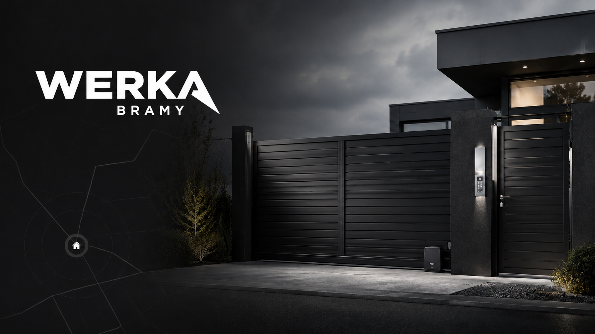
Solidne wykonanie, dopasowanie do posesji i konkretny efekt bez zbędnego kombinowania. Od pomiaru po montaż.
Dlaczego Werka Bramy
Strona została uproszczona i oparta głównie na realnych realizacjach, żeby od razu było widać, czym firma się zajmuje i jak wygląda efekt końcowy.
Brama i ogrodzenie są dopasowywane do szerokości wjazdu, stylu domu oraz sposobu codziennego użytkowania.
Furtka, przęsła i brama mogą tworzyć jedną linię wizualną zamiast przypadkowego zestawu elementów.
Na końcu liczy się nie tylko wygląd, ale też wygoda: napędy, sterowanie i prawidłowa regulacja całego układu.
Oferta
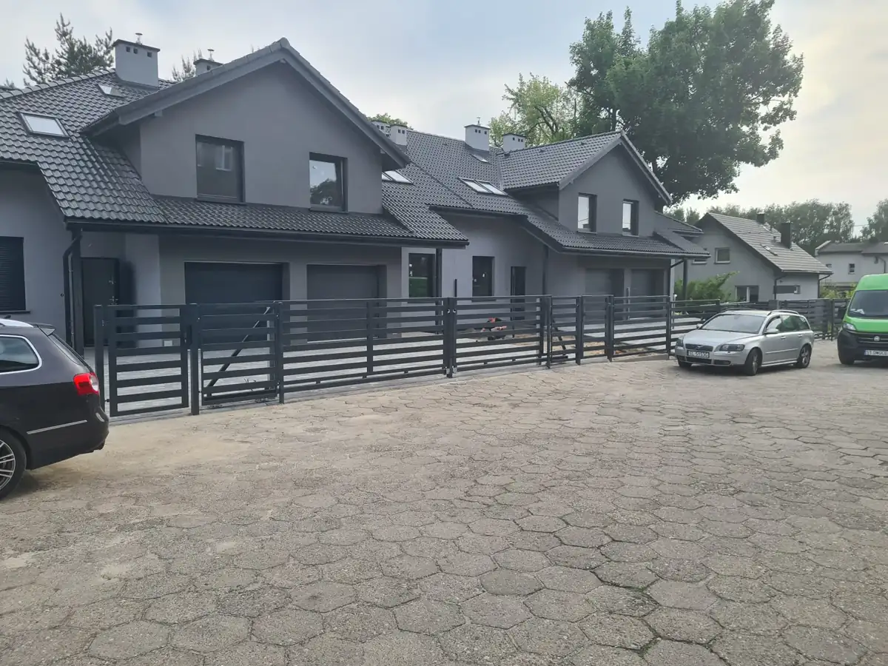
Nowoczesne rozwiązanie dla posesji, na których liczy się wygoda i oszczędność miejsca.
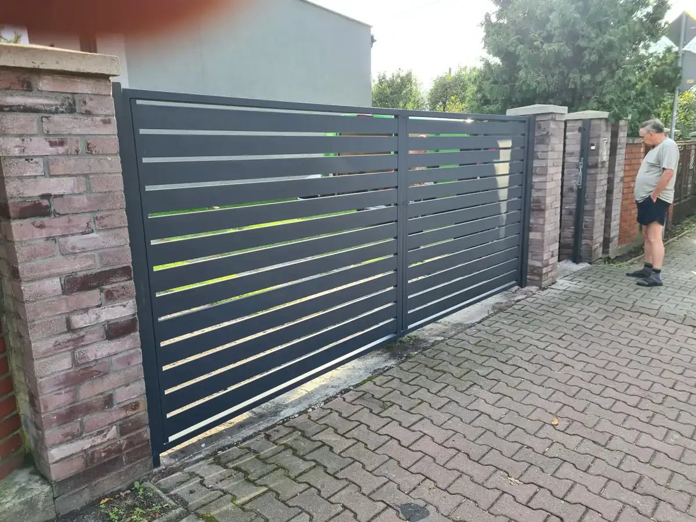
Solidna konstrukcja dopasowana do frontu posesji i wybranego sposobu otwierania.
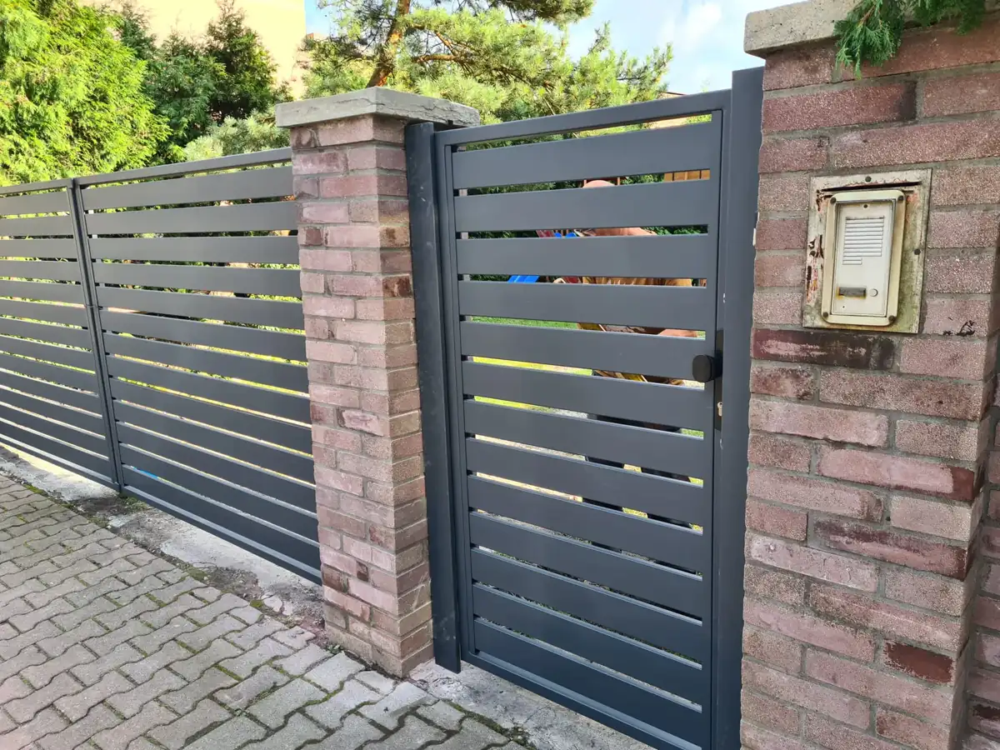
Spójny wygląd wejścia i ogrodzenia z dopasowaniem do bramy i słupków.
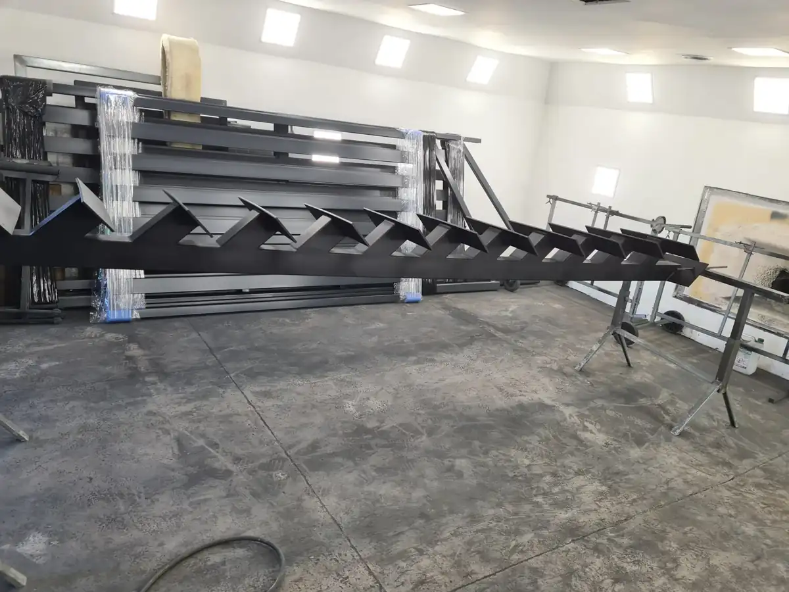
Dodatkowe realizacje stalowe wykonywane pod konkretny projekt i zastosowanie.
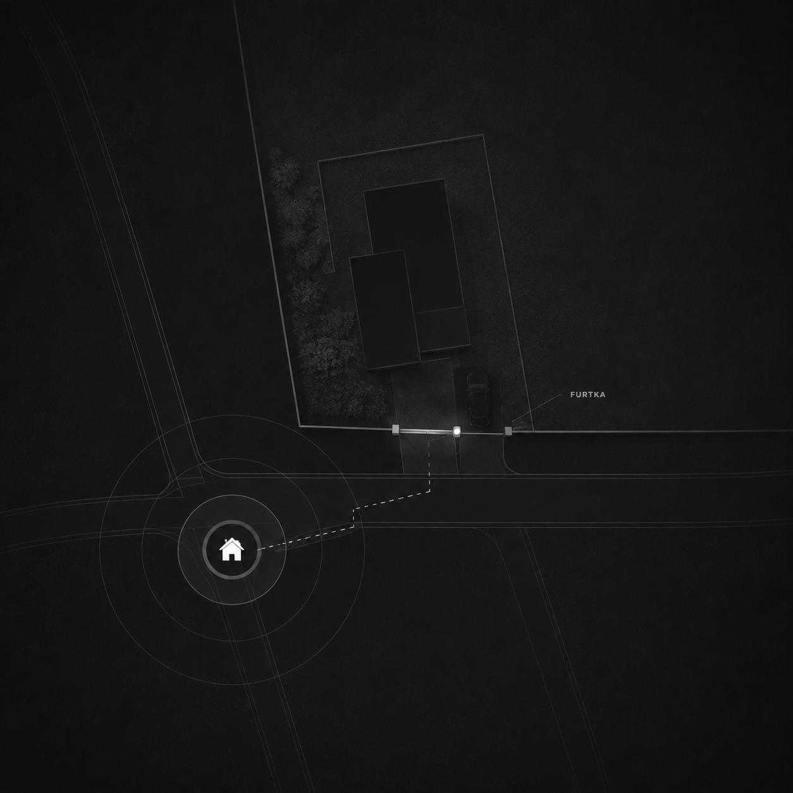
Automatyka
Wraca motyw mapki z domem i zaznaczoną furtką — bo techniczna strona realizacji też ma znaczenie. Dobór napędu, sterowania i zabezpieczeń jest dopasowany do konkretnego układu wjazdu.
Wybrane realizacje
Zostawione zostały te ujęcia, które najlepiej pokazują finalny efekt, proporcje i jakość wykonania.
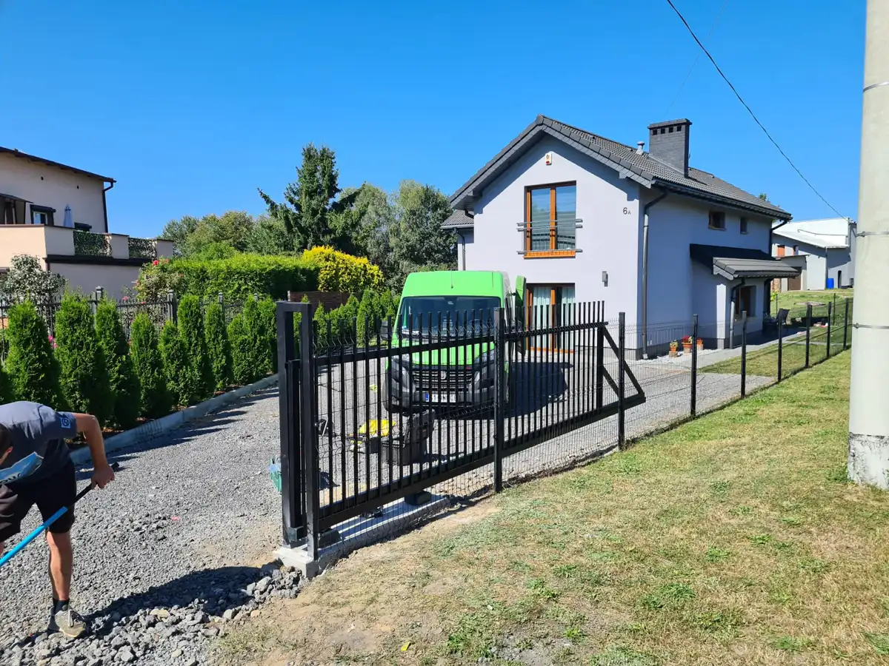
Prosty układ i czytelna forma przy nowoczesnym domu.
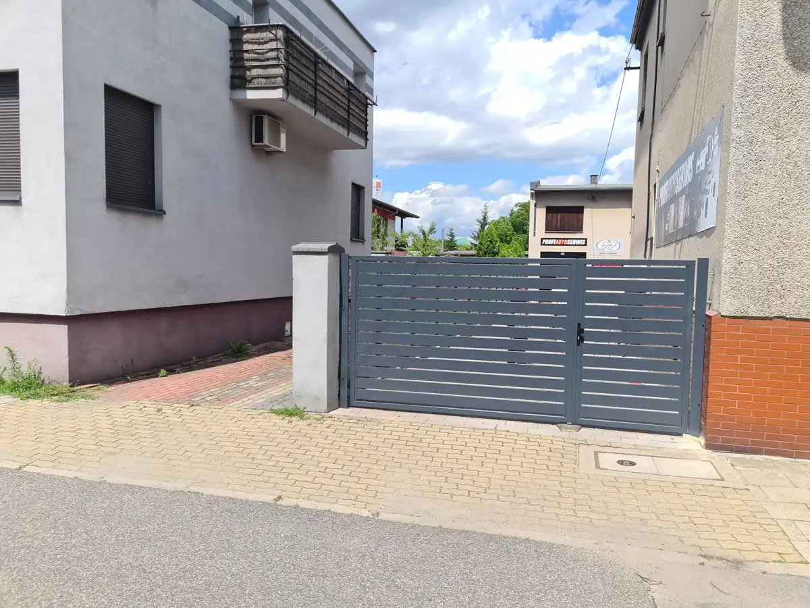
Brama dopasowana do zabudowy i całej linii ogrodzenia.
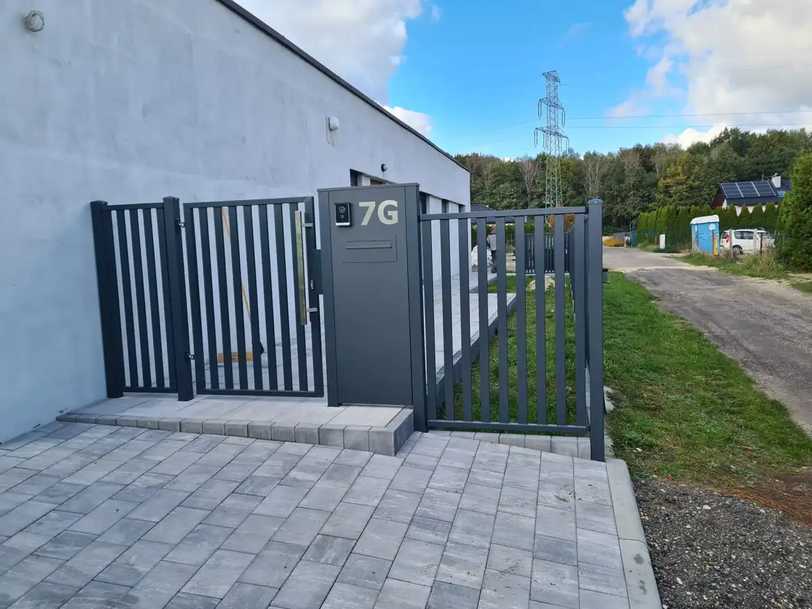
Furtka z prostym, technicznym charakterem i uporządkowanym detalem.
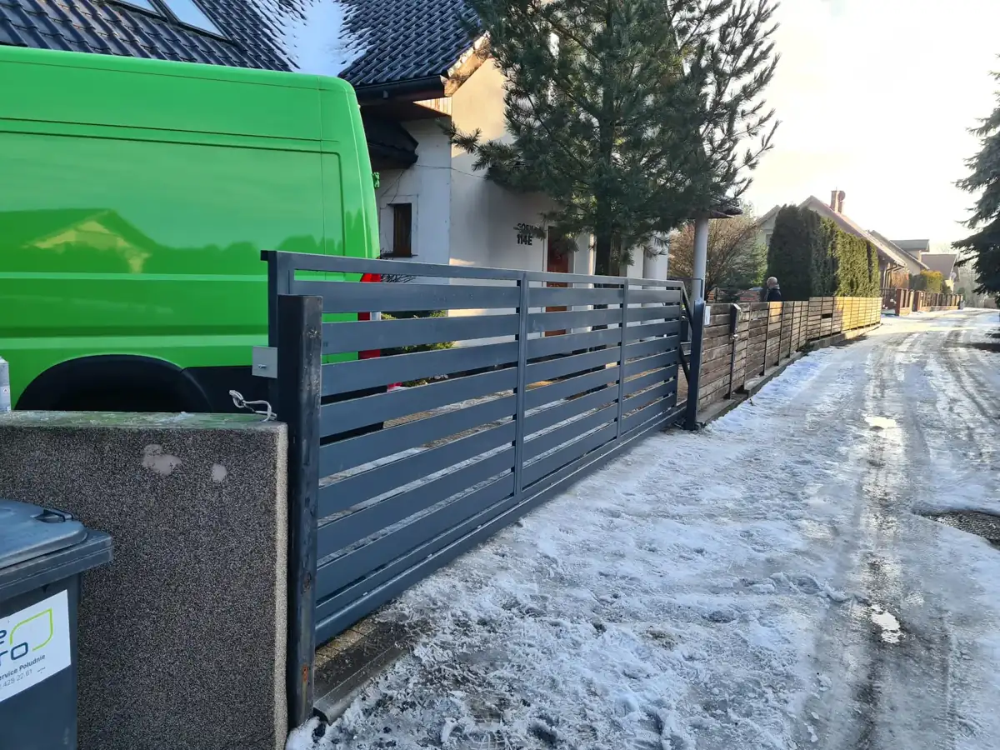
Praktyczna realizacja z czytelnym układem poziomych profili.
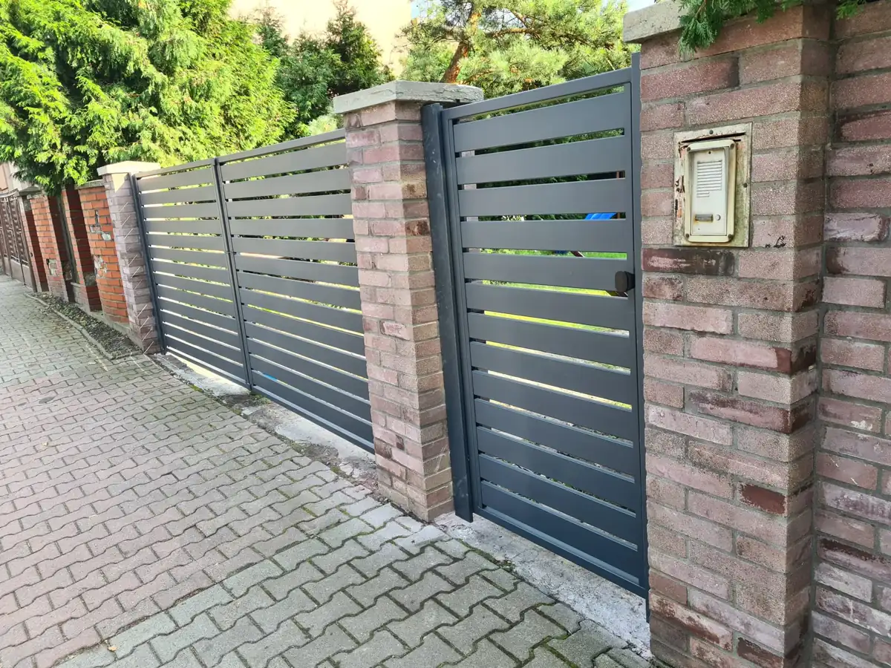
Brama, furtka i ogrodzenie utrzymane w jednej stylistyce.
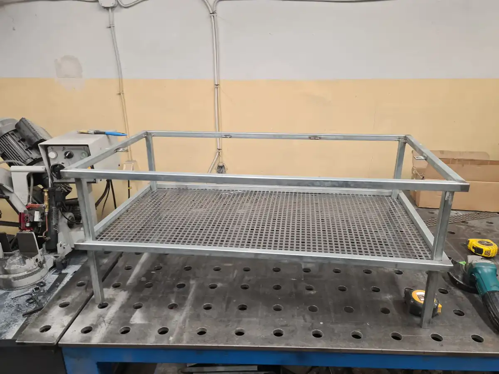
Przykład pracy wykonywanej poza standardowymi bramami i furtkami.
Kontakt
Wyślij kilka informacji i zdjęcie miejsca realizacji. Najszybciej przez formularz lub WhatsApp.